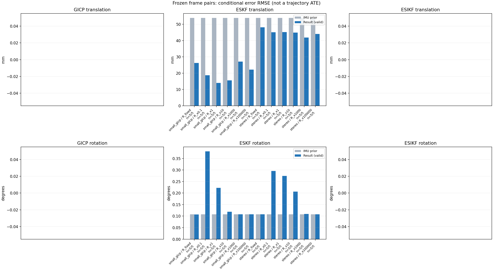

20261015_113028_roll_right · depth=disparity_cache · cache=c52010d0f993354ac352
模型视差：/home/ubuntu22/slam/SIO_SLAM/models/tensorrt/disp_896x448_fp16.plan；engine SHA256=604cf6ac1f705c877260711730dd5d2d58c2a21f3020c03c668401ef7fb1e768。输入为生产裁剪与光照处理后的 RGB 0..255；此实验使用原始浮点像素视差，不应用完整前端的邻域视差后处理。
原始 ONNX SHA256：e9f49736a65d68d06681add463866b6defdf78fdd7f4f50f6cc941b682fdc0bc。
代价体图改写验证：ONNX Runtime 固定随机特征输入，最大绝对误差 0；该项检查图改写，完整模型精度仍需由录制数据评估。
配准代码版本：744ac2d993ae629b0cc44a3b1d995e04ab4fad48；观测生成版本：744ac2d993ae629b0cc44a3b1d995e04ab4fad48。
固定图像对与纯 IMU 先验；ESKF 回放固定 GICP 观测，ESIKF 直接读取点云。真值只用于此报告。
同时查看 converged 与 solver_status：上游默认 Stereo 在 max_iter / stopped_at_minimum 时也可能置 converged=true。valid 表示输入检查通过，不表示精度提升。欧氏 GICP 未提供独立的点距 RMSE，该列显示 NaN。
误差按每对图像的锚点计算，单位 m / degrees。此处 RMSE 不是全序列 ATE；末帧受同一锚点条件约束。NIS 与条件马氏距离是诊断量，少量相关图像对不能用于宣称协方差已校准。
全部指标 CSV · R / P / K 矩阵 CSV · Stereo 求解逐轮 CSV · ESIKF 逐轮 CSV · 配置快照 · 矢量图
| stage | method | variant | valid | total | translation RMSE (m) | rotation RMSE (deg) |
|---|---|---|---|---|---|---|
| eskf | small_gicp | R_fixed | 5 | 5 | 0.026266 | 0.10705 |
| eskf | small_gicp | R_x0.1 | 5 | 5 | 0.018705 | 0.3809 |
| eskf | small_gicp | R_x1 | 5 | 5 | 0.014008 | 0.22268 |
| eskf | small_gicp | R_x10 | 5 | 5 | 0.015626 | 0.1185 |
| eskf | small_gicp | R_x1000 | 5 | 5 | 0.02711 | 0.10743 |
| eskf | small_gicp | R_x100000 | 5 | 5 | 0.022155 | 0.1074 |
| eskf | stereo | R_fixed | 5 | 5 | 0.0482 | 0.10738 |
| eskf | stereo | R_x0.1 | 5 | 5 | 0.045139 | 0.2954 |
| eskf | stereo | R_x1 | 5 | 5 | 0.045223 | 0.27449 |
| eskf | stereo | R_x10 | 5 | 5 | 0.044937 | 0.2058 |
| eskf | stereo | R_x1000 | 5 | 5 | 0.041824 | 0.1091 |
| eskf | stereo | R_x100000 | 5 | 5 | 0.044055 | 0.1075 |

| stage | case | method | variant | status | solver_status | inliers | converged | covariance_convention | covariance_from_hessian | fitness | registration_rmse_m | prior_trans_error_m | result_trans_error_m | prior_rot_error_deg | result_rot_error_deg | R_rot_trace_rad2 | R_pos_trace_m2 | nis_regularized |
|---|---|---|---|---|---|---|---|---|---|---|---|---|---|---|---|---|---|---|
| eskf | static_start | small_gicp | R_x0.1 | updated | 10141 | 1 | right_source_body | 1 | 0.97052 | nan | 7.6181e-05 | 0.0058404 | 0.0061233 | 0.22305 | 2.9158e-07 | 4.6267e-06 | 132.37 | |
| eskf | static_start | small_gicp | R_x1 | updated | 10141 | 1 | right_source_body | 1 | 0.97052 | nan | 7.6181e-05 | 0.0029136 | 0.0061233 | 0.16975 | 2.9158e-06 | 4.6267e-05 | 32.419 | |
| eskf | static_start | small_gicp | R_x10 | updated | 10141 | 1 | right_source_body | 1 | 0.97052 | nan | 7.6181e-05 | 0.0013494 | 0.0061233 | 0.063208 | 2.9158e-05 | 0.00046267 | 6.2648 | |
| eskf | static_start | small_gicp | R_x1000 | updated | 10141 | 1 | right_source_body | 1 | 0.97052 | nan | 7.6181e-05 | 9.2024e-05 | 0.0061233 | 0.0068221 | 0.0029158 | 0.046267 | 0.082306 | |
| eskf | static_start | small_gicp | R_x100000 | updated | 10141 | 1 | right_source_body | 1 | 0.97052 | nan | 7.6181e-05 | 7.6279e-05 | 0.0061233 | 0.0061297 | 0.29158 | 4.6267 | 0.00082697 | |
| eskf | static_start | small_gicp | R_fixed | updated | 10141 | 1 | right_source_body | 1 | 0.97052 | nan | 7.6181e-05 | 0.00013013 | 0.0061233 | 0.0072931 | 0.00022846 | 0.0012 | 0.56138 | |
| eskf | static_start | stereo | R_x0.1 | updated | max_iter | 9433 | 1 | left_target_body | 1 | 0.89855 | 0.046033 | 7.6181e-05 | 0.0011031 | 0.0061233 | 0.015168 | 1.3543e-09 | 1.2978e-08 | 2.5108 |
| eskf | static_start | stereo | R_x1 | updated | max_iter | 9433 | 1 | left_target_body | 1 | 0.89855 | 0.046033 | 7.6181e-05 | 0.0010205 | 0.0061233 | 0.013267 | 1.3543e-08 | 1.2978e-07 | 2.275 |
| eskf | static_start | stereo | R_x10 | updated | max_iter | 9433 | 1 | left_target_body | 1 | 0.89855 | 0.046033 | 7.6181e-05 | 0.00063829 | 0.0061233 | 0.005156 | 1.3543e-07 | 1.2978e-06 | 1.1874 |
| eskf | static_start | stereo | R_x1000 | updated | max_iter | 9433 | 1 | left_target_body | 1 | 0.89855 | 0.046033 | 7.6181e-05 | 4.872e-05 | 0.0061233 | 0.0046542 | 1.3543e-05 | 0.00012978 | 0.028513 |
| eskf | static_start | stereo | R_x100000 | updated | max_iter | 9433 | 1 | left_target_body | 1 | 0.89855 | 0.046033 | 7.6181e-05 | 7.5443e-05 | 0.0061233 | 0.0061006 | 0.0013543 | 0.012978 | 0.00030732 |
| eskf | static_start | stereo | R_fixed | updated | max_iter | 9433 | 1 | left_target_body | 1 | 0.89855 | 0.046033 | 7.6181e-05 | 6.804e-05 | 0.0061233 | 0.005916 | 0.00022846 | 0.0012 | 0.0047625 |
| eskf | sync_motion | small_gicp | R_x0.1 | updated | 9845 | 1 | right_source_body | 1 | 0.92311 | nan | 0.00070607 | 0.019222 | 0.0094797 | 0.11208 | 3.269e-07 | 4.9069e-06 | 102.23 | |
| eskf | sync_motion | small_gicp | R_x1 | updated | 9845 | 1 | right_source_body | 1 | 0.92311 | nan | 0.00070607 | 0.021773 | 0.0094797 | 0.062685 | 3.269e-06 | 4.9069e-05 | 12.139 | |
| eskf | sync_motion | small_gicp | R_x10 | updated | 9845 | 1 | right_source_body | 1 | 0.92311 | nan | 0.00070607 | 0.02243 | 0.0094797 | 0.029916 | 3.269e-05 | 0.00049069 | 1.5346 | |
| eskf | sync_motion | small_gicp | R_x1000 | updated | 9845 | 1 | right_source_body | 1 | 0.92311 | nan | 0.00070607 | 0.0035005 | 0.0094797 | 0.0083767 | 0.003269 | 0.049069 | 0.043296 | |
| eskf | sync_motion | small_gicp | R_x100000 | updated | 9845 | 1 | right_source_body | 1 | 0.92311 | nan | 0.00070607 | 0.00069756 | 0.0094797 | 0.0094463 | 0.3269 | 4.9069 | 0.00050121 | |
| eskf | sync_motion | small_gicp | R_fixed | updated | 9845 | 1 | right_source_body | 1 | 0.92311 | nan | 0.00070607 | 0.01619 | 0.0094797 | 0.021391 | 0.00022846 | 0.0012 | 0.44674 | |
| eskf | sync_motion | stereo | R_x0.1 | updated | max_iter | 9585 | 1 | left_target_body | 1 | 0.89714 | 0.07899 | 0.00070607 | 0.0021371 | 0.0094797 | 0.013962 | 1.3951e-09 | 1.3343e-08 | 11.258 |
| eskf | sync_motion | stereo | R_x1 | updated | max_iter | 9585 | 1 | left_target_body | 1 | 0.89714 | 0.07899 | 0.00070607 | 0.0019506 | 0.0094797 | 0.012024 | 1.3951e-08 | 1.3343e-07 | 7.4218 |
| eskf | sync_motion | stereo | R_x10 | updated | max_iter | 9585 | 1 | left_target_body | 1 | 0.89714 | 0.07899 | 0.00070607 | 0.0016673 | 0.0094797 | 0.011232 | 1.3951e-07 | 1.3343e-06 | 1.8577 |
| eskf | sync_motion | stereo | R_x1000 | updated | max_iter | 9585 | 1 | left_target_body | 1 | 0.89714 | 0.07899 | 0.00070607 | 0.00081413 | 0.0094797 | 0.00693 | 1.3951e-05 | 0.00013343 | 0.055493 |
| eskf | sync_motion | stereo | R_x100000 | updated | max_iter | 9585 | 1 | left_target_body | 1 | 0.89714 | 0.07899 | 0.00070607 | 0.00060466 | 0.0094797 | 0.009126 | 0.0013951 | 0.013343 | 0.00073942 |
| eskf | sync_motion | stereo | R_fixed | updated | max_iter | 9585 | 1 | left_target_body | 1 | 0.89714 | 0.07899 | 0.00070607 | 0.0014731 | 0.0094797 | 0.0083066 | 0.00022846 | 0.0012 | 0.0064611 |
| eskf | main_motion | small_gicp | R_x0.1 | updated | 12390 | 1 | right_source_body | 1 | 0.93186 | nan | 0.001643 | 0.025306 | 0.075969 | 0.36933 | 2.3843e-07 | 4.6318e-06 | 143.25 | |
| eskf | main_motion | small_gicp | R_x1 | updated | 12390 | 1 | right_source_body | 1 | 0.93186 | nan | 0.001643 | 0.0148 | 0.075969 | 0.20437 | 2.3843e-06 | 4.6318e-05 | 36.993 | |
| eskf | main_motion | small_gicp | R_x10 | updated | 12390 | 1 | right_source_body | 1 | 0.93186 | nan | 0.001643 | 0.0049845 | 0.075969 | 0.081229 | 2.3843e-05 | 0.00046318 | 5.569 | |
| eskf | main_motion | small_gicp | R_x1000 | updated | 12390 | 1 | right_source_body | 1 | 0.93186 | nan | 0.001643 | 0.0027699 | 0.075969 | 0.075596 | 0.0023843 | 0.046318 | 0.060018 | |
| eskf | main_motion | small_gicp | R_x100000 | updated | 12390 | 1 | right_source_body | 1 | 0.93186 | nan | 0.001643 | 0.0014176 | 0.075969 | 0.075953 | 0.23843 | 4.6318 | 0.00060555 | |
| eskf | main_motion | small_gicp | R_fixed | updated | 12390 | 1 | right_source_body | 1 | 0.93186 | nan | 0.001643 | 0.028053 | 0.075969 | 0.072315 | 0.00022846 | 0.0012 | 0.9567 | |
| eskf | main_motion | stereo | R_x0.1 | updated | max_iter | 11837 | 1 | left_target_body | 1 | 0.89127 | 0.066401 | 0.001643 | 0.0015209 | 0.075969 | 0.076289 | 1.0674e-09 | 1.1922e-08 | 2.0469 |
| eskf | main_motion | stereo | R_x1 | updated | max_iter | 11837 | 1 | left_target_body | 1 | 0.89127 | 0.066401 | 0.001643 | 0.0014329 | 0.075969 | 0.076549 | 1.0674e-08 | 1.1922e-07 | 1.7614 |
| eskf | main_motion | stereo | R_x10 | updated | max_iter | 11837 | 1 | left_target_body | 1 | 0.89127 | 0.066401 | 0.001643 | 0.0011051 | 0.075969 | 0.076954 | 1.0674e-07 | 1.1922e-06 | 0.77889 |
| eskf | main_motion | stereo | R_x1000 | updated | max_iter | 11837 | 1 | left_target_body | 1 | 0.89127 | 0.066401 | 0.001643 | 0.00071088 | 0.075969 | 0.07607 | 1.0674e-05 | 0.00011922 | 0.026862 |
| eskf | main_motion | stereo | R_x100000 | updated | max_iter | 11837 | 1 | left_target_body | 1 | 0.89127 | 0.066401 | 0.001643 | 0.00069958 | 0.075969 | 0.076087 | 0.0010674 | 0.011922 | 0.00034419 |
| eskf | main_motion | stereo | R_fixed | updated | max_iter | 11837 | 1 | left_target_body | 1 | 0.89127 | 0.066401 | 0.001643 | 0.00067437 | 0.075969 | 0.076146 | 0.00022846 | 0.0012 | 0.0037058 |
| eskf | main_motion_long | small_gicp | R_x0.1 | updated | 12069 | 1 | right_source_body | 1 | 0.79188 | nan | 0.0098867 | 0.019383 | 0.22748 | 0.50166 | 2.7342e-07 | 5.2844e-06 | 248.05 | |
| eskf | main_motion_long | small_gicp | R_x1 | updated | 12069 | 1 | right_source_body | 1 | 0.79188 | nan | 0.0098867 | 0.010315 | 0.22748 | 0.31969 | 2.7342e-06 | 5.2844e-05 | 53.962 | |
| eskf | main_motion_long | small_gicp | R_x10 | updated | 12069 | 1 | right_source_body | 1 | 0.79188 | nan | 0.0098867 | 0.01038 | 0.22748 | 0.23366 | 2.7342e-05 | 0.00052844 | 7.205 | |
| eskf | main_motion_long | small_gicp | R_x1000 | updated | 12069 | 1 | right_source_body | 1 | 0.79188 | nan | 0.0098867 | 0.011494 | 0.22748 | 0.22768 | 0.0027342 | 0.052844 | 0.075642 | |
| eskf | main_motion_long | small_gicp | R_x100000 | updated | 12069 | 1 | right_source_body | 1 | 0.79188 | nan | 0.0098867 | 0.010395 | 0.22748 | 0.22746 | 0.27342 | 5.2844 | 0.00076791 | |
| eskf | main_motion_long | small_gicp | R_fixed | updated | 12069 | 1 | right_source_body | 1 | 0.79188 | nan | 0.0098867 | 0.020811 | 0.22748 | 0.22679 | 0.00022846 | 0.0012 | 1.0099 | |
| eskf | main_motion_long | stereo | R_x0.1 | updated | max_iter | 11778 | 1 | left_target_body | 1 | 0.76342 | 0.087208 | 0.0098867 | 0.0077637 | 0.22748 | 0.26224 | 1.1409e-09 | 1.346e-08 | 84.096 |
| eskf | main_motion_long | stereo | R_x1 | updated | max_iter | 11778 | 1 | left_target_body | 1 | 0.76342 | 0.087208 | 0.0098867 | 0.0076328 | 0.22748 | 0.25601 | 1.1409e-08 | 1.346e-07 | 70.573 |
| eskf | main_motion_long | stereo | R_x10 | updated | max_iter | 11778 | 1 | left_target_body | 1 | 0.76342 | 0.087208 | 0.0098867 | 0.0074924 | 0.22748 | 0.2417 | 1.1409e-07 | 1.346e-06 | 27.501 |
| eskf | main_motion_long | stereo | R_x1000 | updated | max_iter | 11778 | 1 | left_target_body | 1 | 0.76342 | 0.087208 | 0.0098867 | 0.0075799 | 0.22748 | 0.22989 | 1.1409e-05 | 0.0001346 | 0.72849 |
| eskf | main_motion_long | stereo | R_x100000 | updated | max_iter | 11778 | 1 | left_target_body | 1 | 0.76342 | 0.087208 | 0.0098867 | 0.0078815 | 0.22748 | 0.2277 | 0.0011409 | 0.01346 | 0.0090141 |
| eskf | main_motion_long | stereo | R_fixed | updated | max_iter | 11778 | 1 | left_target_body | 1 | 0.76342 | 0.087208 | 0.0098867 | 0.0081226 | 0.22748 | 0.22736 | 0.00022846 | 0.0012 | 0.075095 |
| eskf | static_end | small_gicp | R_x0.1 | updated | 9727 | 1 | right_source_body | 1 | 0.96155 | nan | 0.1201 | 0.018155 | 0.0045728 | 0.52446 | 4.0424e-07 | 4.5482e-06 | 174.26 | |
| eskf | static_end | small_gicp | R_x1 | updated | 9727 | 1 | right_source_body | 1 | 0.96155 | nan | 0.1201 | 0.01316 | 0.0045728 | 0.26687 | 4.0424e-06 | 4.5482e-05 | 90.72 | |
| eskf | static_end | small_gicp | R_x10 | updated | 9727 | 1 | right_source_body | 1 | 0.96155 | nan | 0.1201 | 0.024152 | 0.0045728 | 0.064284 | 4.0424e-05 | 0.00045482 | 42.728 | |
| eskf | static_end | small_gicp | R_x1000 | updated | 9727 | 1 | right_source_body | 1 | 0.96155 | nan | 0.1201 | 0.059352 | 0.0045728 | 0.0059337 | 0.0040424 | 0.045482 | 2.2417 | |
| eskf | static_end | small_gicp | R_x100000 | updated | 9727 | 1 | right_source_body | 1 | 0.96155 | nan | 0.1201 | 0.04841 | 0.0045728 | 0.0063116 | 0.40424 | 4.5482 | 0.028478 | |
| eskf | static_end | small_gicp | R_fixed | updated | 9727 | 1 | right_source_body | 1 | 0.96155 | nan | 0.1201 | 0.044356 | 0.0045728 | 0.011242 | 0.00022846 | 0.0012 | 5.9743 | |
| eskf | static_end | stereo | R_x0.1 | updated | max_iter | 7752 | 1 | left_target_body | 1 | 0.76806 | 0.10658 | 0.1201 | 0.10059 | 0.0045728 | 0.60107 | 1.9623e-09 | 1.9433e-08 | 2939.3 |
| eskf | static_end | stereo | R_x1 | updated | max_iter | 7752 | 1 | left_target_body | 1 | 0.76806 | 0.10658 | 0.1201 | 0.1008 | 0.0045728 | 0.55226 | 1.9623e-08 | 1.9433e-07 | 2494.6 |
| eskf | static_end | stereo | R_x10 | updated | max_iter | 7752 | 1 | left_target_body | 1 | 0.76806 | 0.10658 | 0.1201 | 0.10018 | 0.0045728 | 0.38376 | 1.9623e-07 | 1.9433e-06 | 1156.7 |
| eskf | static_end | stereo | R_x1000 | updated | max_iter | 7752 | 1 | left_target_body | 1 | 0.76806 | 0.10658 | 0.1201 | 0.093208 | 0.0045728 | 0.028478 | 1.9623e-05 | 0.00019433 | 29.322 |
| eskf | static_end | stereo | R_x100000 | updated | max_iter | 7752 | 1 | left_target_body | 1 | 0.76806 | 0.10658 | 0.1201 | 0.098189 | 0.0045728 | 0.0043504 | 0.0019623 | 0.019433 | 0.41679 |
| eskf | static_end | stereo | R_fixed | updated | max_iter | 7752 | 1 | left_target_body | 1 | 0.76806 | 0.10658 | 0.1201 | 0.10746 | 0.0045728 | 0.0076269 | 0.00022846 | 0.0012 | 7.0619 |